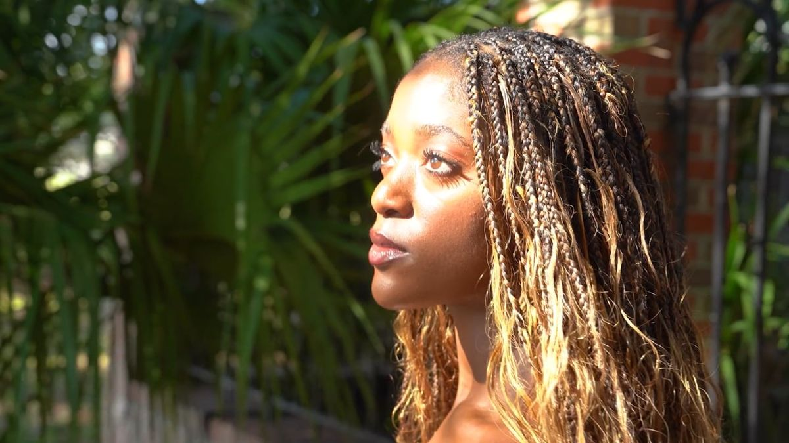
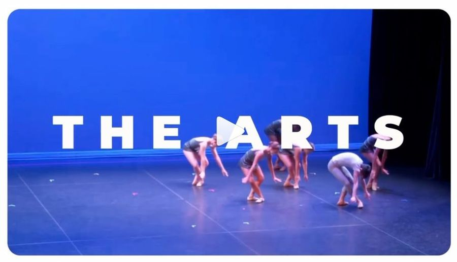
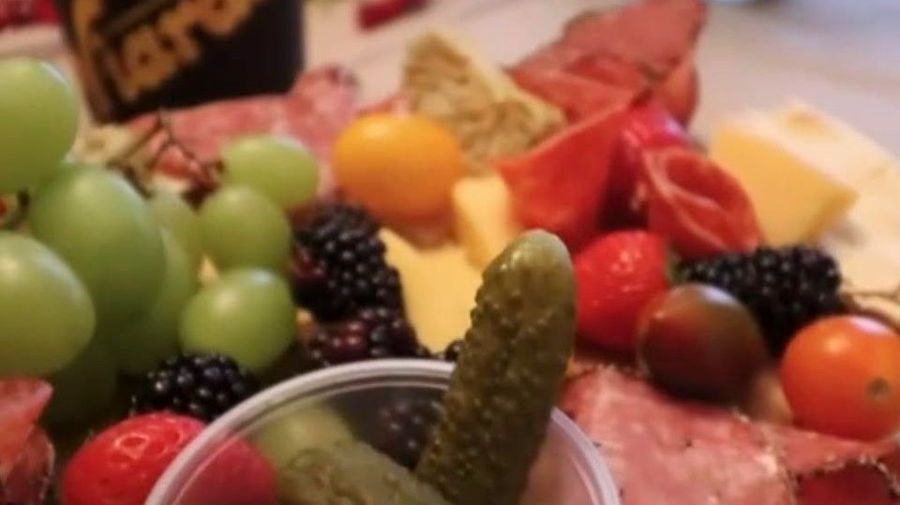
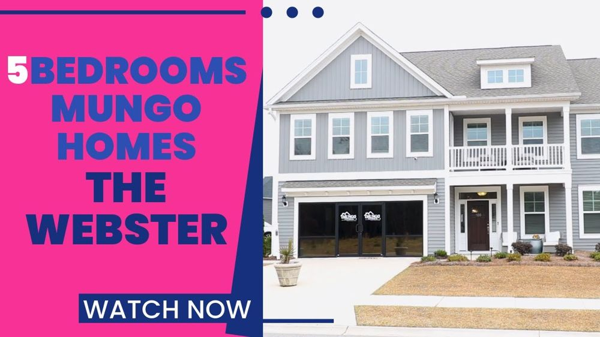

Designed for the audience and the camera.
Four projects: three business environments and one personal celebration, then the film work behind them. The environments are proposed designs — rendered from photos of the spaces as they are today.


Directed, shot and cut by one person.
On each of these, Sharla served as director, producer and editor — cutting in Premiere Pro, finishing with After Effects, and handling music, voiceover and colour correction.

Promote a Positive Mindset
Dance, acting and music carrying one message — female empowerment. Creative direction, videography and editing.
Watch on Vimeo ↗
Recital promotional edit
Performance footage shaped into a refined promo for recital and intensive marketing.
Watch the reel ↗
Charcuterie social promo
Videography and editing for a food and beverage brand, built for social distribution.
Watch the reel ↗
Realtor home tour
A walkthrough built to help a client present a listing with clarity and warmth.
Watch on YouTube ↗Want to see this on your building?
Send a few photos of the space and a date. You get a render of your own address, not a reference image.